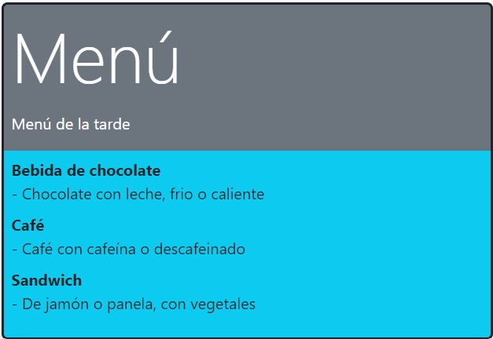

Ejercicio de Tipografías
Elabora un menú como el que se muestra en la figura a continuación.
Las características son las siguientes:
- La parte superior tiene fondo secondary y texto blanco.
- La parte inferior tiene fondo info y texto dark.
- El borde de alrededor es dark de tamaño 3.
